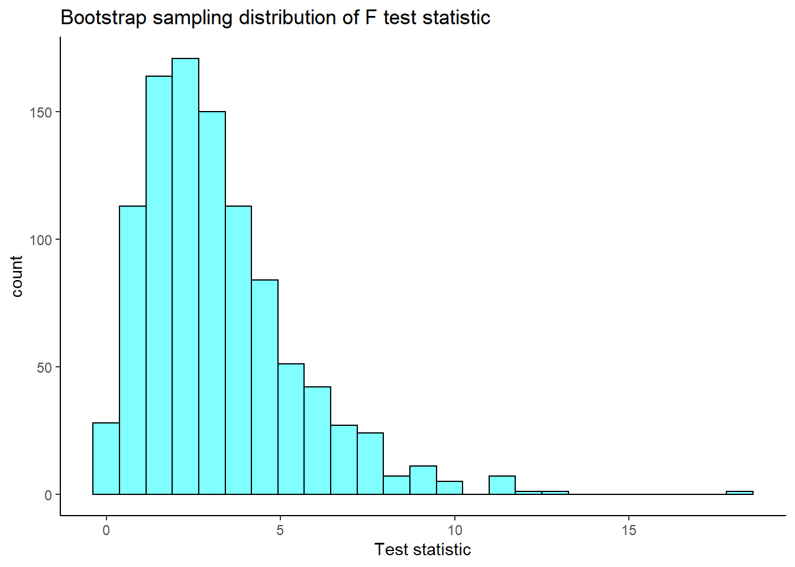
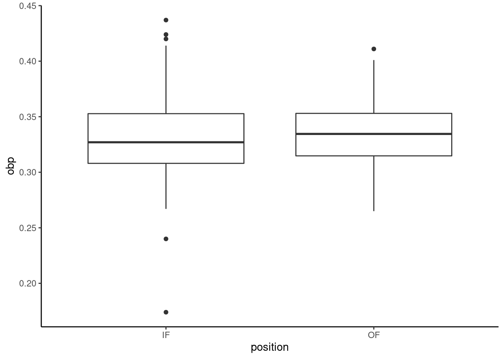
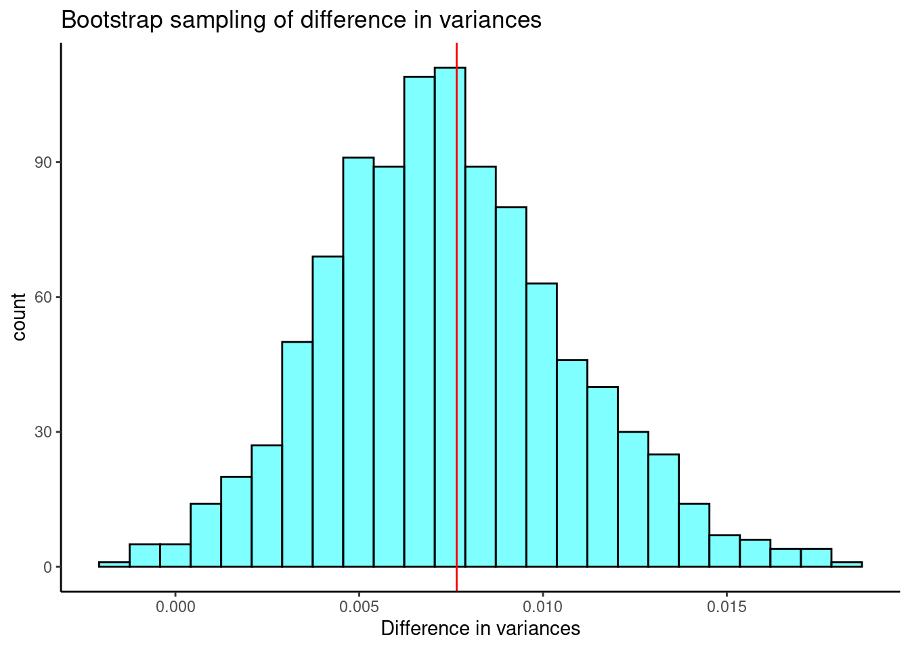

Chapter 22 Additional Hypothesis Tests
22.1 Objectives
- Conduct and interpret a hypothesis test for equality of two or more means using both permutation and the \(F\) distribution.
- Conduct and interpret a goodness of fit test using both Pearson’s chi-squared and randomization to evaluate the independence between two categorical variables.
- Conduct and interpret a hypothesis test for the equality of two variances.
- Know and check assumptions for the tests in this lesson.
22.2 Homework
22.2.1 Problem 1
Golf balls
Repeat the analysis of the golf ball problem from earlier this semester.
- Load the data and tally the data into a table. The data is in
golf_balls.csv.
golf_balls <- read_csv("data/golf_balls.csv")head(golf_balls)## # A tibble: 6 × 1
## number
## <dbl>
## 1 3
## 2 2
## 3 1
## 4 4
## 5 4
## 6 3tally(~number,data=golf_balls)## number
## 1 2 3 4
## 137 138 107 104- Using the function
chisq.testconduct a hypothesis test of equally likely distribution of balls. You may have to read the help menu.
chisq.test(tally(~number,data=golf_balls),p=c(.25,.25,.25,.25))##
## Chi-squared test for given probabilities
##
## data: tally(~number, data = golf_balls)
## X-squared = 8.4691, df = 3, p-value = 0.03725- Repeat part b. but assume balls with the numbers 1 and 2 occur 30% of the time and balls with 3 and 4 occur 20%.
chisq.test(tally(~number,data=golf_balls),p=c(.3,.3,.2,.2))##
## Chi-squared test for given probabilities
##
## data: tally(~number, data = golf_balls)
## X-squared = 2.4122, df = 3, p-value = 0.491422.2.2 Problem 2
Bootstrap hypothesis testing
Repeat the analysis of the MLB data from the lesson but this time generate a bootstrap distribution of the \(F\) statistic.
First, read in the data.
mlb_obp <- read_csv("data/mlb_obp.csv")Convert position to a factor.
mlb_obp <- mlb_obp %>%
mutate(position=as.factor(position))Summarize the data.
favstats(obp~position,data=mlb_obp)## position min Q1 median Q3 max mean sd n missing
## 1 C 0.219 0.30000 0.3180 0.35700 0.405 0.3226154 0.04513175 39 0
## 2 DH 0.287 0.31625 0.3525 0.36950 0.412 0.3477857 0.03603669 14 0
## 3 IF 0.174 0.30800 0.3270 0.35275 0.437 0.3315260 0.03709504 154 0
## 4 OF 0.265 0.31475 0.3345 0.35300 0.411 0.3342500 0.02944394 120 0We need a function to resample the data, we will use the resample() from the mosaic package.
library(broom)f_boot <- function(x){
aov(obp~position,data=resample(x)) %>%
tidy() %>%
summarize(stat=meansq[1]/meansq[2]) %>%
pull()
}set.seed(541)
results<-do(1000)*f_boot(mlb_obp)Let’s plot our sampling distribution.
results %>%
gf_histogram(~f_boot,fill="cyan",color="black") %>%
gf_theme(theme_classic()) %>%
gf_labs(title="Bootstrap sampling distribution of F test statistic",
x="Test statistic")
Now the confidence interval for the F-statistic is:
cdata(~f_boot,data=results)## lower upper central.p
## 2.5% 0.3546682 8.724895 0.95We are 95% confident that the \(F\) statistic is in the interval \((0.35,8.72)\) which includes 1 so we fail to reject the null hypothesis of equal means. Remember under the null hypothesis the ratio of the variance between means to the pooled variance within categories should be 1.
22.2.3 Problem 3
Test of variance
We have not performed a test of variance so we will create our own.
- Using the MLB from the lesson, subset on
IFandOF.
mlb_prob3 <- mlb_obp %>%
filter(position=="IF"|position=="OF") %>%
droplevels()summary(mlb_prob3)## position obp
## IF:154 Min. :0.1740
## OF:120 1st Qu.:0.3100
## Median :0.3310
## Mean :0.3327
## 3rd Qu.:0.3530
## Max. :0.4370The function droplevels() gets rid of C and DH in the factor levels.
- Create a side-by-side boxplot.
mlb_prob3 %>%
gf_boxplot(obp~position) %>%
gf_theme(theme_classic())
The hypotheses are:
\(H_0\): \(\sigma^2_{IF}=\sigma^2{OF}\). There is no difference in the variance of on base percentage for infielders and outfielders.
\(H_A\): \(\sigma^2_{IF}\neq \sigma^2_{OF}\). There is a difference in variances.
- Use the differences in sample standard deviations as your test statistic. Using a permutation test, find the p-value and discuss your decision.
mlb_prob3 %>%
group_by(position) %>%
summarize(stat=sd(obp))## # A tibble: 2 × 2
## position stat
## <fct> <dbl>
## 1 IF 0.0371
## 2 OF 0.0294obs <- mlb_prob3 %>%
summarize(stat=sd(obp[position=="IF"])-sd(obp[position=="OF"])) %>%
pull()
obs## [1] 0.007651101Let’s write a function to shuffle the position.
perm_stat <- function(x){
x %>%
mutate(position=shuffle(position)) %>%
summarize(stat=sd(obp[position=="IF"])-sd(obp[position=="OF"])) %>%
pull()
}set.seed(443)
results<-do(1000)*perm_stat(mlb_prob3)results %>%
gf_histogram(~perm_stat,fill="cyan",color="black") %>%
gf_vline(xintercept=obs,color="red") %>%
gf_theme(theme_classic()) %>%
gf_labs(title="Sampling distribution of difference in variances",
subtitle="Randomization permutation test",
x="Test statistic")
The p-value is
2*prop1(~(perm_stat>=obs),data=results)## prop_TRUE
## 0.04395604This is a two sided test since we did not know in advance which variance would be larger. We reject the hypothesis of equal variance but the p-value is too close to the significance level. The conclusion is suspect. We need more data.
- Create a bootstrap distribution of the differences in sample standard deviations, and report a 95% confidence interval. Compare with part c.
Let’s write a function.
var_stat <- function(x){
resample(x) %>%
summarize(stat=sd(obp[position=="IF"])-sd(obp[position=="OF"])) %>%
pull()
}set.seed(827)
results<-do(1000)*var_stat(mlb_prob3)results %>%
gf_histogram(~var_stat,fill="cyan",color="black") %>%
gf_vline(xintercept=obs,color="red")%>%
gf_theme(theme_classic()) %>%
gf_labs(title="Bootstrap sampling of difference in variances",
x="Difference in variances")